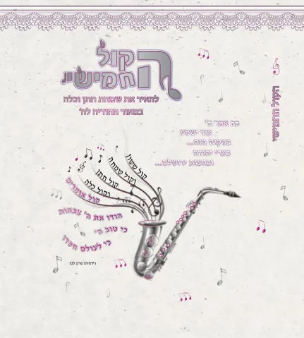
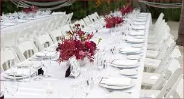
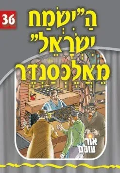
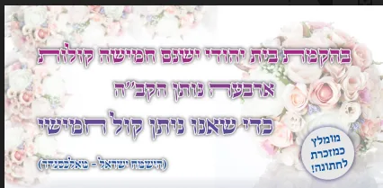
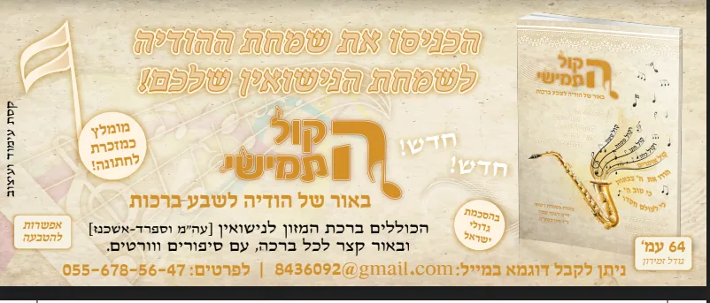
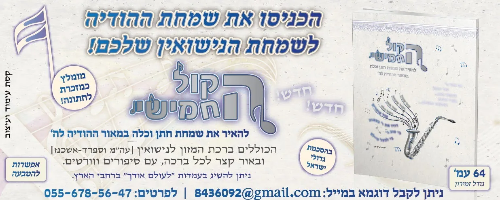

בהקמת בית יהודי יש חמשה קולות: 1.קוֹל שָׂשׂוֹן 2.וְקוֹל שִׂמְחָה, 3.קוֹל חָתָן 4.וְקוֹל כַּלָּה. 5. קוֹל אֹמְרִים: הוֹדוּ אֶת יְהוָה צְבָאוֹת. ארבעה נותן ה' כדי שאנחנו ניתן את החמישי.
גמ"ח ברכונים לשבע ברכות
מכירים את התופעה, מגיעים לחתונה, ומחכים... מחכים לחופה... מחכים למנה הראשונה... מחכים לחתן והכלה שיצאו מהחדר יחוד... ובינתיים מתייבשים...
אנחנו יוצאים לחפש מזכרת לחתונה, וחושבים בפעם השלישית האם שוב נביא ברכת המזון, מי צריך את זה, לכולם יש כבר עומס של ברכונים. אז מה כן אפשר???
ועכשיו לעיקר: מי מאיתנו לא היה עושה כל מאמץ בשביל דבר שיעזור לו, שבבית שהבן/הבת שלו מקיימים תשרה אהבה ואחווה שלום ורעות לאורך ימים ושנים טובות.
כמה זה קורע את הלב, לראות זוגות נפרדים, וחוזרים לבית הוריהם עם ילדים, והילדים גדלים ללא אבא או ללא אמא.
וגם עם לא מגיע המצב עד לבית הדין, כמה זוגות חיים על אש קרה, אם לא קפואה. חיים כך כי מי אמר שהבא בתור יהיה יותר טוב, ועוד סיבות נוספות.
אבל כולנו רוצים מאוד ששמחת החתן והכלה תמשיך, לא רק בשנה הקרובה, אלא לאורך ימים ושנים טובות.
האם יש איזה סגולה קלה, טובה ונאמנה לעשות בשביל הזוג הצעיר?
סדרת הברכונים של 'הקול החמישי' יתנו לכם את האירוע המושלם, האורחים לא יתייבשו, מחכה להם על השולחן חוברת נפלאה מלאה וורטים, סיפורים, ורעיונות, והכל בנושא החתונה והשבע ברכות.
הפתעתם אותם! פתאום הם יגלו ברכון שלא ראו בחיים, ברכון עם סיפורי צדיקים הקשורים לחתונה. וורטים ומאמרים נפלאים. ברכון שמכניס הרבה הודיה לה' בשמחת הנישואין.
וגולת הכותרת: ישנה סגולה נפלאה של ה'ישמח ישראל' מאלכסנדר המלמדנו, שבחתונה יש כעין עיסקה ביננו לבין הקב''ה, בורא עולם נותן ארבעה קולות (ששון ושמחה שלום ורעות) בעד שאנו ניתן סה"כ קול אחד – קול ההודיה - שנעורר את אהבת ה' בלבנו ונודה הודיה נרגשת. - ניתן לראות כאן את מקורות הדברים.
לשם כך יצרנו את החוברת הנפלאה - הקול החמישי - לעורר את ההודיה בחתונה.
בנוסף בברכון הקול החמישי תמצאו:
- ברכת המזון גם אשכנזי וגם ספרדי. כולל כל ההוספות הנוהגות לשבע ברכות.
- שבע ברכות עם באור קצר, לתת לכולם את השמחה וההודיה לה' מכל הלב.
- הלכות שבע ברכות בקצרה - לאשכנזים.
- לימוד מרתק על המעלה והזכות להודות לה' בחתונה.
- תפילה לברך את החתן והכלה בהרחמן ברכת המזון.
מתאים לחתונה, לסעודת שבע ברכות, ובמיוחד לשבת שבע ברכות!
כך כולם יהנו ממש מסעודה של מצווה עם ברכה שלמה, כולם יברכו את החתן והכלה, ואת ההורים, שיתן להם הקב''ה כל משאלות ליבם לטובה.
כל מה שעליכם לעשות זה לבוא לשאול מאתנו את הברכונים המיוחדים ללא תשלום!
והשמחה שלהם תהיה בעז"ה אחרית לחלוטין!!!
עם הרבה אהבת ה' שמחה והודיה – את השמחה שלכם, כולם ירצו אח''כ לחכות.
מומלץ לשאול בין 50 ברכונים. יש להשאיר פקדון בזמן ההשאלה.
במידה ויהיה חסר כמה ברכונים – אנא תרמו לגמ''ח כפי נדבת לבכם. (ולפחות 2 ש''ח לברכון)
לחץ כאן לראות את החוברת
לבירור על מוקד הסמוך לביתכם או להקמת מוקד נוסף ניתן לפנות ל 055-6785647.
ניתן גם לקבל את החוברות במתנה ללא צורך להחזיר כולל משלוח עד הבית - ראה בהמשך.
🎈🎈🎈🎈🎈🎈🎈🎈🎈🎈🎈🎈🎈🎈🎈🎈🎈🎈🎈🎈🎈🎈🎈🎈🎈🎈🎈🎈🎈🎈🎈🎈🎈🎈
את 'הקול החמישי' ניתן להשיג בשתי מהדורות
מהדורת ספר בכריכה קשה עם 'צבע חמישי' - צבע חמישי- הינו צבע מיוחד שאינו קיים משילוב של ארבעת צבעי היסוד. למשל- זהב וכסף.
מתאים מאוד למתנה לחתן או לכלה.

וכן ניתן להשיג את הקול החמישי בכריכה רכה - חוברת.
מתאים מאוד לחלוקה בחתונה ובשבת חתן.

מחירי 'הקול החמישי' למעוניינים לקנות
מהדורת ספר - 20 ש"ח
מהדורה רכה - 10 ש"ח.- הנחה גדולה לכמויות - ראה בהמשך.
המחירים כוללים משלוח עד הבית.
לתשלום מאובטח באשראי לחץ כאן
ניתן להשיג את הקול החמישי גם בכל רחבי הארץ - בעמדות לעולם אודך
🍀🍀🍀🍀🍀🍀🍀🍀🍀🍀🍀🍀🍀🍀🍀🍀🍀🍀🍀🍀🍀🍀🍀🍀🍀🍀🍀🍀🍀🍀🍀🍀🍀🍀

במשנתו של האדמו"ר בעל ישמח ישראל (מאלכסנדר) זצ"ל זי"ע (פר' תרומה אות ח) מצאנו דברים נפלאים ביותר וז''ל:
- "הארבעה קולות הראשונים, קול ששון וקול שמחה קול חתן וקול כלה, זה נותן הקב"ה באתערותא דלעילא, היינו שהוא ברחמיו קורא הדורות מראש ומכריז בת פלוני לפלוני ומזווג זיווגים ונעשה קול חתן וקול כלה קול ששון וקול שמחה,
- אולם עיקר המכוון מכל זה הוא שיתעורר בנו אח"כ התעוררות וניצוץ אש לעורר חיבת הקודש מצידנו ולהעלות נחת רוח לשבח ולהודות לה' צבאות, וזהו הקול החמישי קול אומרים הודו את ה' צבאות.
- וזהו שאמרו כל הנהנה מסעודת חתן ואינו משמחו, היינו שהיה מקבל השפע מלמעלה אך שאינו משמחו (להקב''ה) בחזרה, להעלות נחת רוח לפניו ית' מידנו, הריהו מזלזל בחמשה קולות, כי עיקר השמחה מסעודת חתן הוא לקול החמישי, דהיינו שיתעורר בחזרה שפע התעוררות להודות לה' צבאות.

הישמח ישראל מלמדנו שיש כאן כעין עיסקה ביננו לבין הקב''ה, \
הקב''ה נותן ארבעה קולות בעד שאנו ניתן קול אחד, שאנו נעורר את אהבת ה' בלבנו ונודה הודיה נרגשת.
הקב''ה נותן לנו ארבעה גוונים של שמחה ואהבה, בשביל שנאהב אותו ונודה לו.
הקול החמישי בפסוק הוא מטרת כל הארבע קולות,
הקב''ה ברא בעולמו ששון ושמחה של חתן וכלה בשביל לעורר אותנו עם ישראל להודות, אדם הנהנה מהמציאות הנפלאה של חתן וכלה ואינו (משמחו) לעורר את החתן והכלה להודות להשי''ת, הוא לא מזלזל רק בששון ובשמחה, זה מראה שהוא בכלל לא מכיר בכל הטוב שנתנו לו, הוא עובר על כל החמשה קולות שכן לכולם היתה מטרה אחת - להודות, והוא לא קיימה.
לשם כך יצרנו את החוברת הנפלאה - הקול החמישי - לעורר את ההודיה בחתונה.

ניתן לראות כאן דוגמה של החוברת
🍀🍀🍀🍀🍀🍀🍀🍀🍀🍀🍀🍀🍀🍀🍀🍀🍀🍀🍀🍀🍀🍀🍀🍀🍀🍀🍀🍀🍀🍀🍀🍀🍀🍀
מבצע לחתונות
מומלץ מאוד להזמין 50 חוברות לחתונה ולשבת חתן
שיהיה לכולם ברכונים מלאים שמחה והודיה
ובנוסף יש בחוברת הלכות שבע ברכות, וברכה מיוחדת לברך את החתן והכלה בברכת המזון (בהסכמת גדולי ישראל).
כרגע יש מחיר מבצע של: 150 ש"ח כולל משלוח עד הבית.
לפרטים: 055-6785647
| מרן המשגיח ר' דב יפה זצ"ל השתדל בפרט בשנותיו האחרונות לברך הברכה מתוך הכתב, וגם כאשר היה בשמחות וכדו’ בדרך כלל היה מביא עמו ברכון, וכשארע שלא יכל להביא כמו בשבת חיפש סידור לברך מתוך הכתב [גם ברכת על המחיה היה מקפיד לברך מתוך ברכון]. באחת מהחתונות של נכדיו כאשר הביאו לו לברך מתוך ברכון יפה שחלקו שם, שמח ואמר שטוב שעשו ברכון יפה, כיון שזה מעורר לכוון טוב בברכת המזון. (מתוך החוברת סדר סעודה וברכת המזון במשנתו של המשגיח). | |

כיצד תשפיע החוברת על החתונה שלנו?
כולם היום מחפשים מזכרת יפה מהחתונה, ברכונים כבר יש לכולם די והותר, בואו תהיו חדשנים
הנה חוברת שאנשים לא מכירים, אנשים יבואו והתענינו יראו דבר חדש וישמחו - עשיתם את זה.
לפני החתונה ואחרי החתונה הרגשות שלנו גועשים ואנחנו רוצים לחוות את הרגעים הנפלאים
זה בדיוק מה שעושה ההודיה לה' בחתונה, היא נותנת לנו לחוות את הרגעים האלו טוב מאוד.
בנוסף בשבת שבע ברכות, הרבה פעמים אנשים מחפשים ברכון - ופתאום אין להם
כמה נחמד שהבאתם לכולם ברכון עם שבע ברכות מבואר - זה ממש הדבר הנכון במקום הנכון.
והכל במחיר מבצע של: 150 ש"ח כולל משלוח עד הבית.
🍀🍀🍀🍀🍀🍀🍀🍀🍀🍀🍀🍀🍀🍀🍀🍀🍀🍀🍀🍀🍀🍀🍀🍀🍀🍀🍀🍀🍀🍀🍀🍀🍀🍀